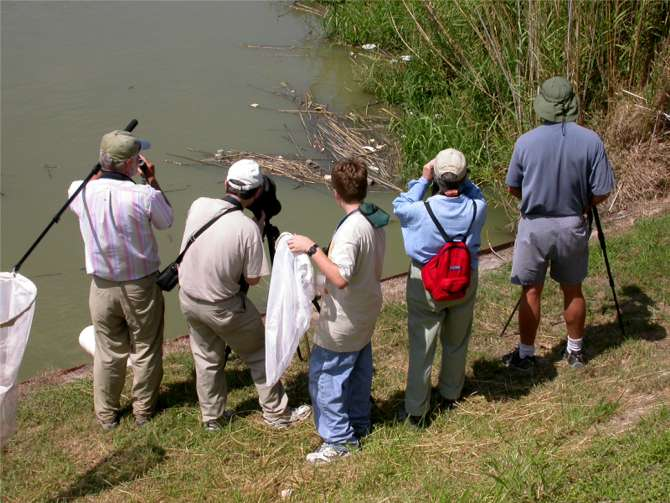

(Will Carter & Sid Dunkle)
(Will Carter, Dwight Peake, & Dennis Paulson)
|
 |
(Dennis Paulson (gesturing), Will Carter, & Dwight Peake)
(A non-standard odonate catching method is demonstrated)
(Dennis Paulson & Sid Dunkle scan the north bank of the Rio Grande)
28 Oct 2009 © Mike Quinn / entomike@gmail.com / Texas Entomology / Texas Dragonfly Information